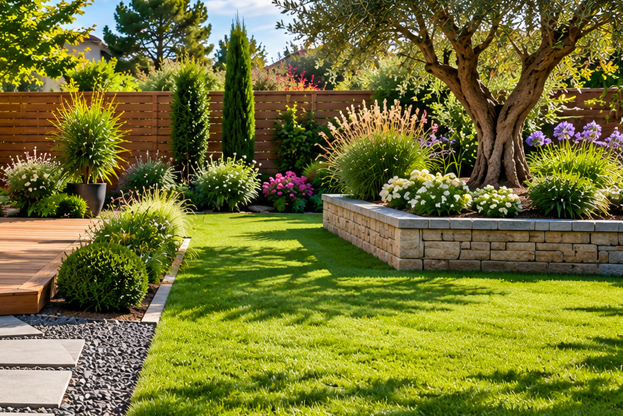
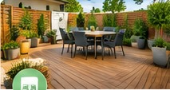

01
Création paysagère
Composer un jardin accueillant et harmonieux, adapté à votre environnement.
L'ART D'IMAGINER VOS EXTÉRIEURS
Aménagement, entretien et mise en valeur de vos espaces verts : imaginez un extérieur agréable à vivre, au fil des saisons.
NOS UNIVERS
Une présentation possible des savoir-faire à personnaliser avec les prestations réelles de l'entreprise.
Composer un jardin accueillant et harmonieux, adapté à votre environnement.

Préserver la beauté de vos extérieurs tout au long de l'année.

Imaginer des lieux de vie extérieurs chaleureux et fonctionnels.
Prestations présentées à titre d'exemple et visuels générés par IA : ils ne représentent pas les réalisations de l'entreprise. À valider avant toute mise en ligne officielle.
INSPIRATIONS
Une direction artistique douce et contemporaine pour mettre en lumière de futures photos de réalisations.
Échanger sur la maquette ↗À PROPOS DE CETTE PROPOSITION
Cette maquette a été imaginée par WebÉclat pour illustrer ce que pourrait devenir la présence en ligne de Tailles Créons Paysagiste. Textes, prestations et visuels sont des exemples, à valider et remplacer avec l'artisan.
ET SI ON ALLAIT PLUS LOIN ?
Vous représentez Tailles Créons ? Cette démonstration est sans engagement. Contactez WebÉclat pour la personnaliser à votre activité.
Contacter WebÉclat ↗